<div class="panel panel-default">
  <div class="panel-body">

<h1>Solving a real-life problem</h1>

<p>Let's say, that we have recently got an idea about repainting a room in our house. In order to know how much paint we need, we would like to know how much wall area do we have. We live in a house with a pitched roof, which leaves us two slanted walls. Let's say, that our room has two rectangular walls with a square window in each of them, and two trapezoid shaped walls. One of those has a circular window in it, and the other has a door. So it should look something like this.
</p>

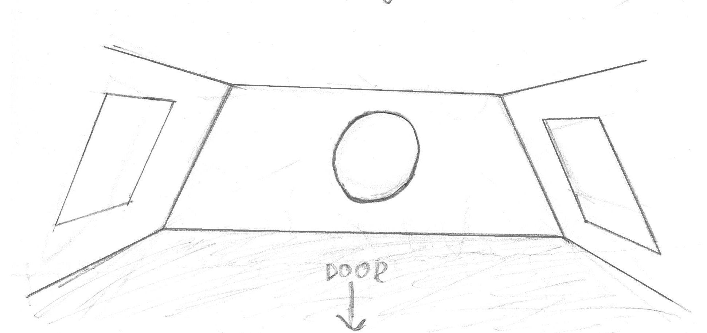
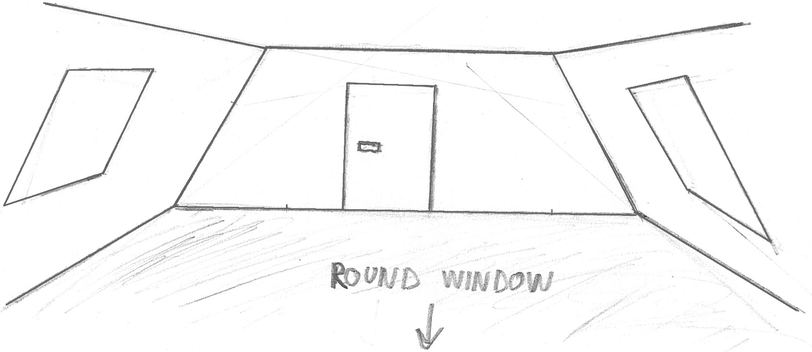

<p>
 Since we are going to need the area of the wall, let's fold the walls to a single plane, so it would be easier to calculate.
</p>

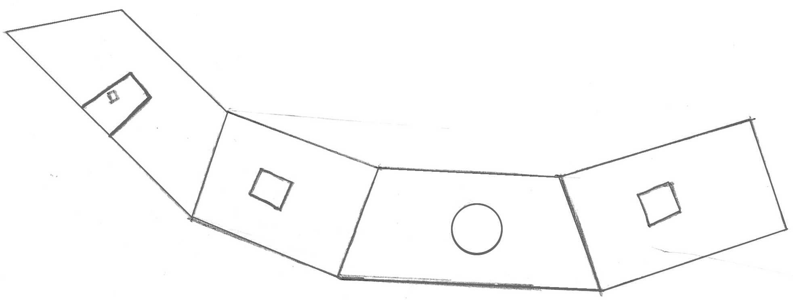

<p>There is no shape in the geometry package, that looks like the folded down version of our room. But the shape we see is made up of the shapes that we have in the geomety package. This means that we should be able to put it on our scheme as well!
</p> 

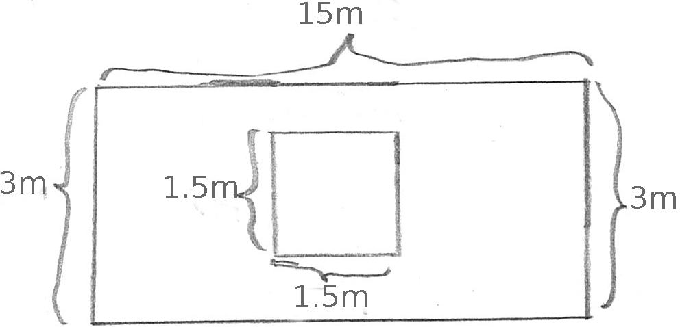

<p>First, let's have a look at our rectangular walls. If we look at them separately, they are nothing more than two rectangles with a square inside of them. Since they look exactly the same and are exactly the same size, then we will need only one of the walls drawn on our scheme, as we can multiply the result by two later.
</p>


<p>Now let's have a look at the wall with the circular window in it. It is a trapezoid and in it is a circle. This means we will have to add a trapezoid and a circle to our scheme.
</p>

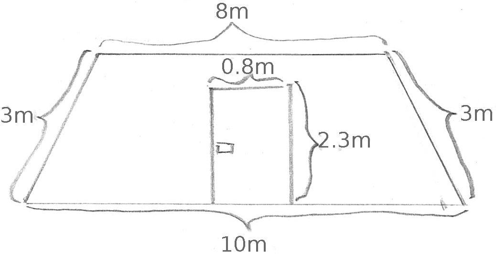

<p>Lastly, let's look at the wall with the door in it. It is exactly the same trapezoid shape as before, just that, this time, there is a rectangular hole inside it. This means, we will add both a trapezoid and a rectangle to our scheme.
</p>

<p>Now, we did need the area of the wall, right? This means we need the area of the shapes. The first rectangular wall has an area of rectangle minus the area of the square window. We will need a rectangle, a square and a substraction block. So, let's make that happen on the scheme.
</p>

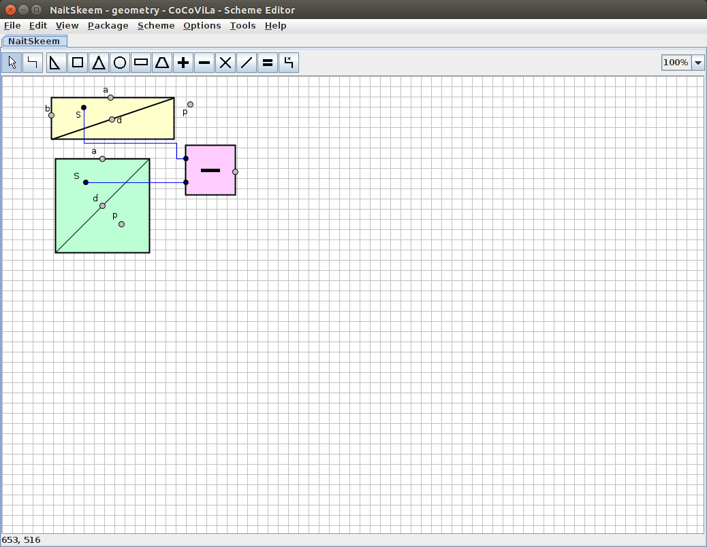

<p>
Since we have two walls like that, we will need to multiply the result by two, meaning we will add a multiplication block, and make one of it's inputs a constant "2".
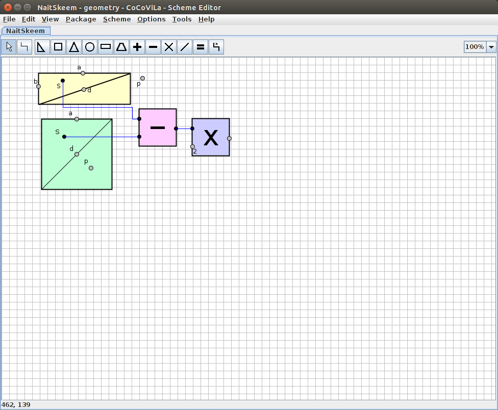
<p>
Up next is the wall with the window. The wall was shaped as a trapezoid and the window in it was a circle. Great, let's add a trapezoid and a cirlce to the scheme. And since it's the area of the wall we're after, let's substract the area of the circle from the area of the trapezoid.
</p>
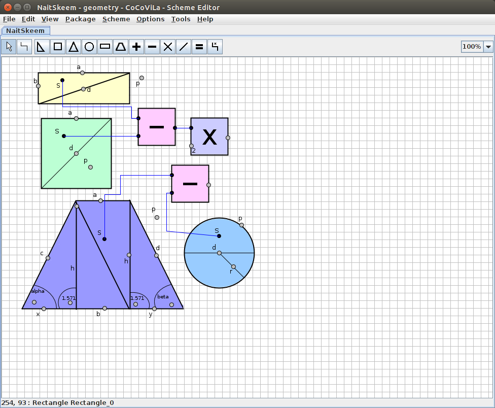
<p>We now have three out of four walls on our scheme, but we also need to add the area of the trapezoid wall to the area of side walls. Let's do that now.
</p>
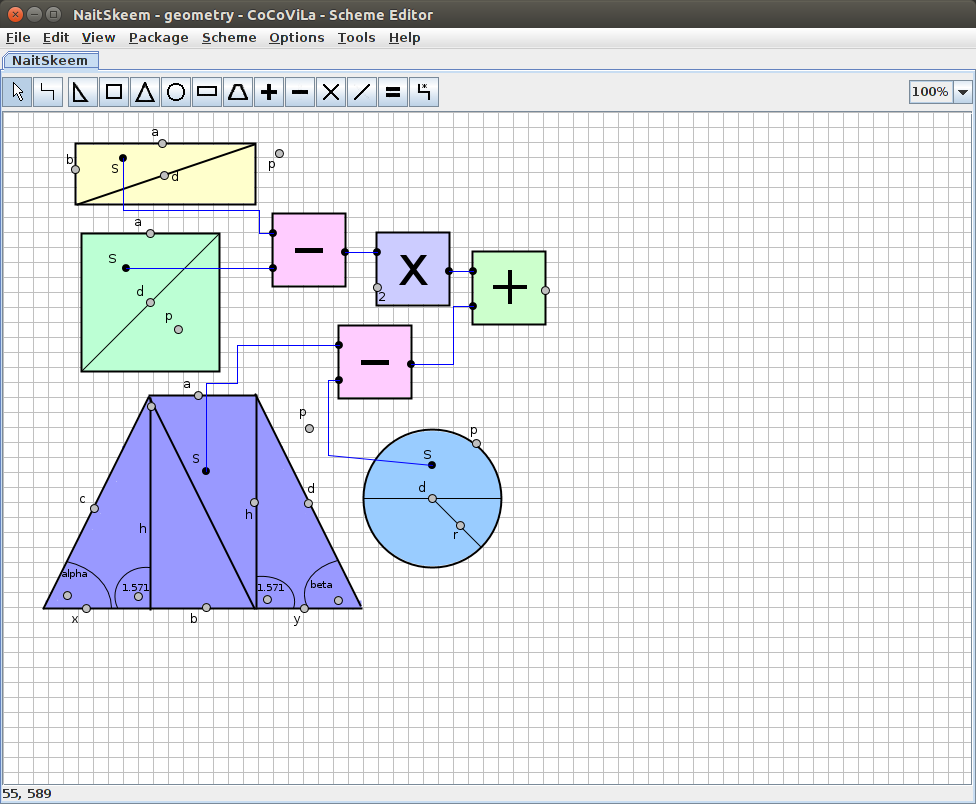
<p>Perfect, just one more wall to add to our little scheme. Now this last wall is a trapezoid with a rectangle in it. No problem, let's add that to the rest of the walls. Finally let's add the answer block too, to show us the final result.
</p>
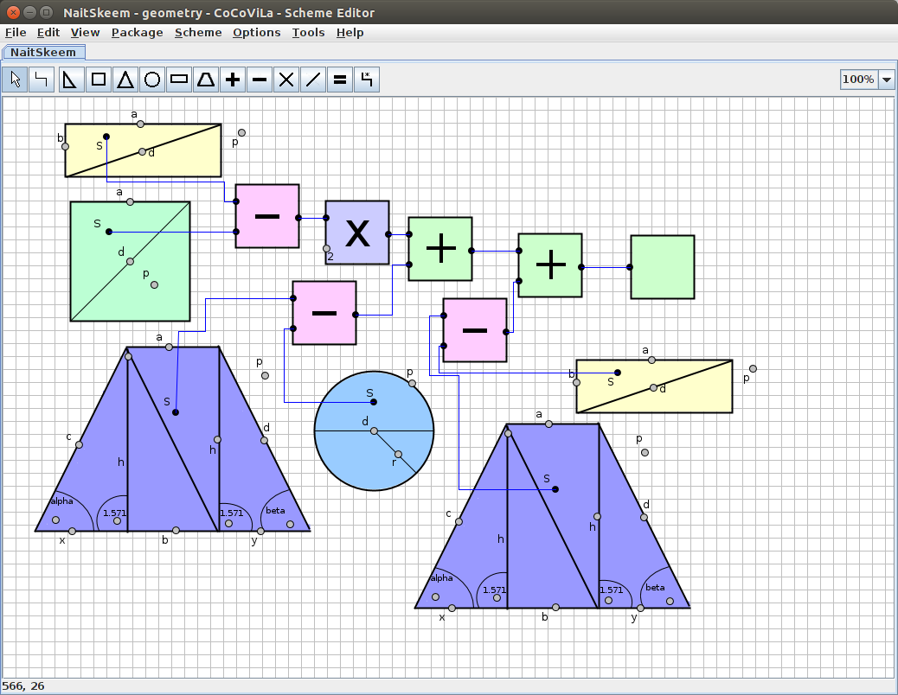
<p>Now we have all pieces on the scheme. But right now we only have wall shapes and connections on the scheme. Time to add the meaurements to make calculations. We have the measurements on a picture of three walls separately up above. Let's add them to the scheme.
</p>

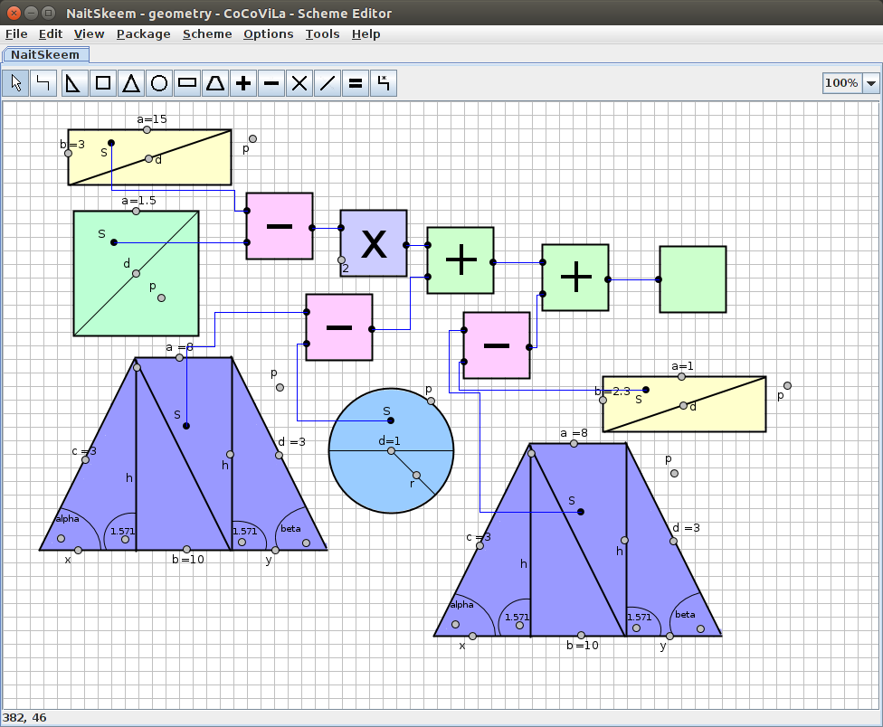

<p>Time to run the scheme and see the results.<p>
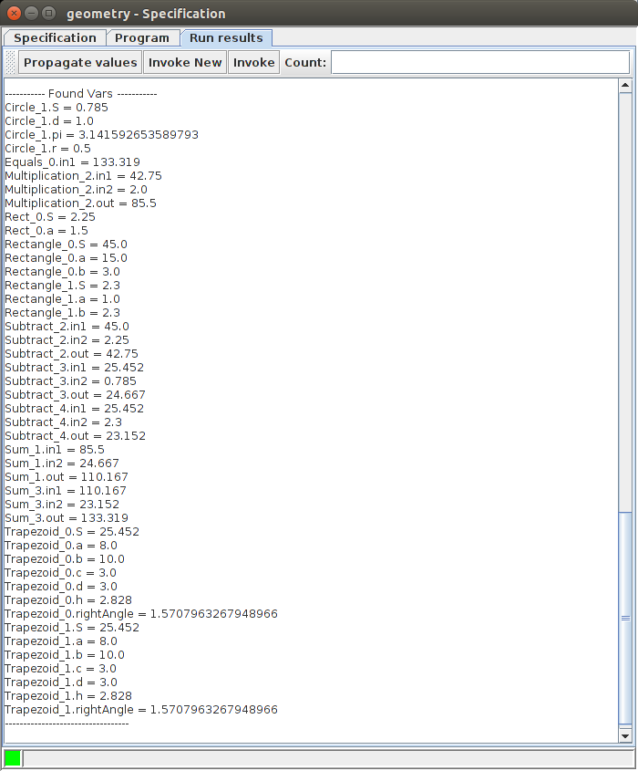
<p>CoCoViLa shows us all of the variables it knows, but the answer is visible after "Equals_0.in1 =". If we propagate values we can see the answer nicely on the scheme as well.
</p>
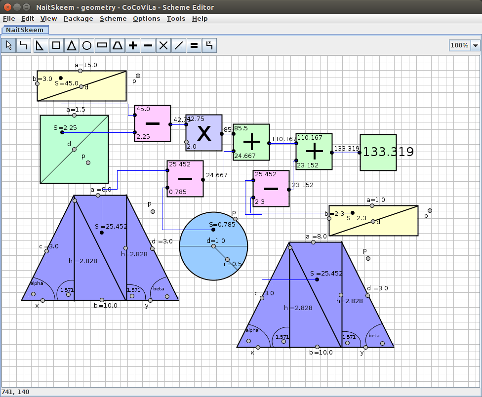
<p>After propagating the anwer appeared to the answer block.
</p>
  </div>
</div>
